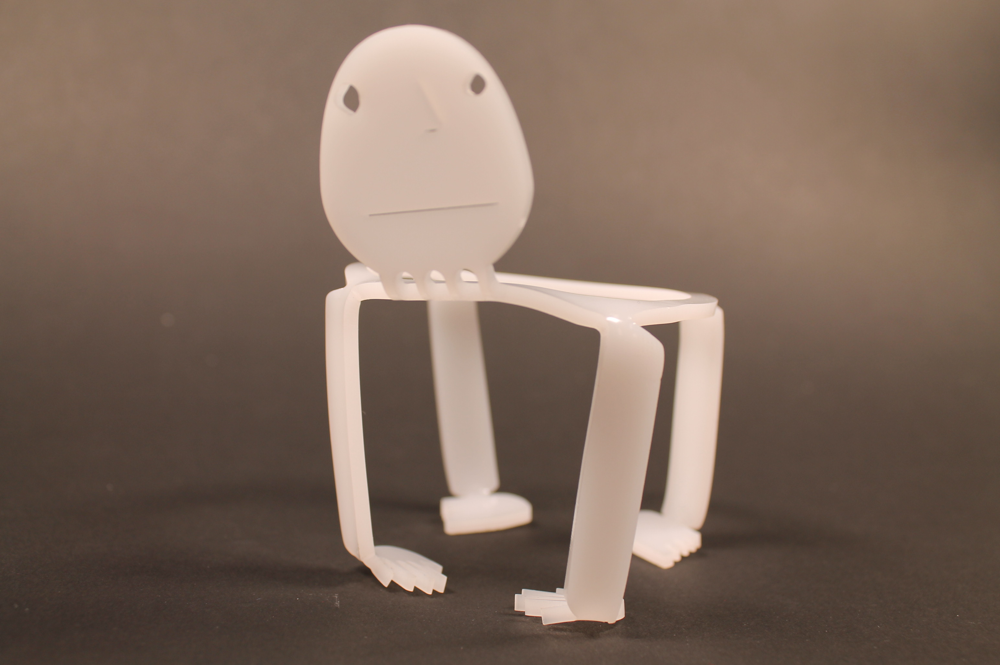
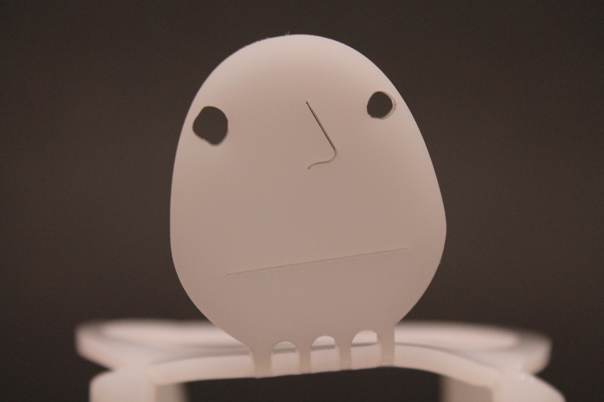
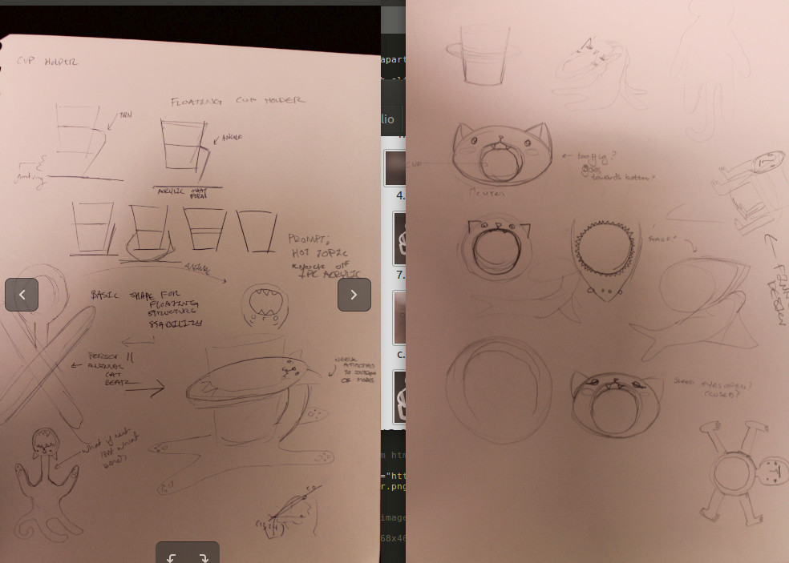
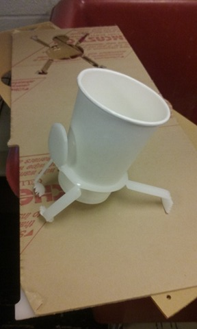
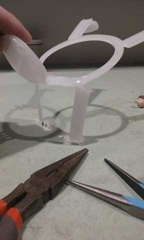
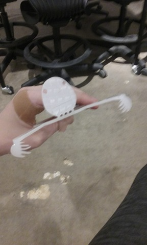
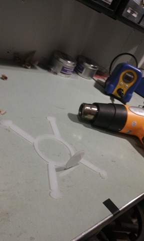

Cup Holder
"I Can Hold That" is an Acrylic Cup Holder for Moody Judy Inc.
Product Description:
This cup holder holds not only cups, but it also holds as much existential crisis and disdain as any piece of acrylic can. Standing on all fours, this cup holder will hold whatever you want
Product Features:
Visually designed to set itself apart from the sea of minimalist cup holders
Holds cup suspended in air, which eliminates the need for coasters
Successfully holds your beverage of choice so you don't have to
Final Product:
 
Prompt:
Moody Judy Inc. sells snappy artisan T-shirts to angsty teenagers, and their artsystorefront boasts a variety of homegrown teas, available for free to their shoppers. Hoping to keep their shoppers’ focus on the shirts and not on their scalded hands, they have commissioned you to design a cup-holder according to the following criteria:
Aesthetic Pleasure: Your employers are artists. They want cup-grippers as snazzy as their Doctor Who beach tanks.
Environmental Concern: Your employers also love the Earth, and want to waste as little material as possible. Minimize the total material used in your fabrication process, including both prototypes and the final product.
Form: For whatever inexplicable, hippie reasons, your employers require that your final product be made of one pieceof acrylic. No assembly required.
Process:
Below are some sketchbook photos. I had originally started off with a simple, sleek suspended cuphoilder design, but wanted to use the opportunity of the promp to explore a more strange, characterized form. I went to the basic shape of my design and realised it could be altered to look like the form of a body. I starte sketching different versions of animals and things that could be heat formed into a cup holder. I planned out and made a plan for a cat that holds the cup in its mouth, but I ended up changing the design to be a weird looking person with a strange face, based off a sketch I made in the final iteration of the cat. After I'd sketched it, I realized It was a much more compelling and unique cup holder design, and thought it would fit with the edgy brand that Moody Judy inc likes to project.
    

{kind=link}
{kind=link}
{kind=link}
{kind=link}
{kind=link}
{kind=link}
{kind=link}
{kind=link}
{kind=link}